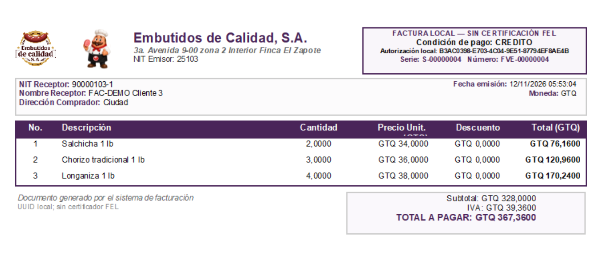

Presione Guardar. Se muestran PDF y PDF e Imprimir.
Elija la salida y seleccione una carpeta.
El PDF se guarda con el UUID local como nombre. Cada factura tiene un UUID distinto.
Después de escribir el PDF se confirma la venta en BD y aparece el mensaje de éxito.
Con PDF e Imprimir se abre ReportViewer: revise la vista previa, configure la página y presione Imprimir para seleccionar su impresora.

La captura corresponde a un PDF de ejemplo. Los valores cambian en cada factura.
Pagos
CONTADO registra el cobro como efectivo, sin solicitar referencia, y deja saldo cero. CREDITO registra el saldo pendiente y valida días, moneda y límite autorizado al cliente. CF no tiene crédito.
Cancelar
Cancelar las opciones o la carpeta antes de emitir conserva el documento en preparación y no confirma una venta. Cancelar la impresión después de guardar el PDF no revierte una factura ya registrada.
Última factura vuelve a abrir su vista previa durante la misma sesión.